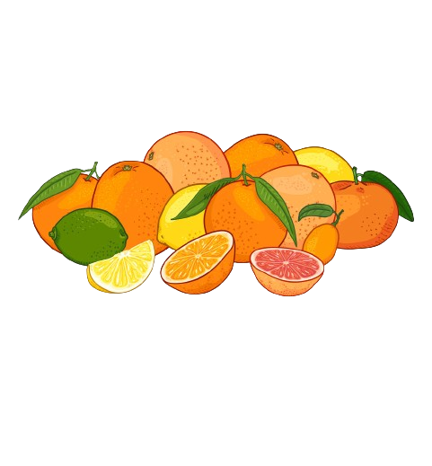
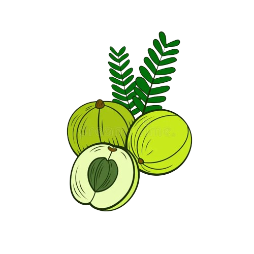
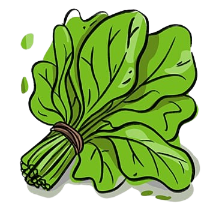
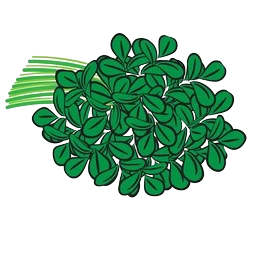
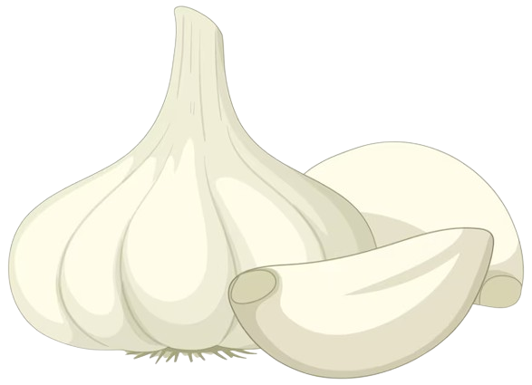
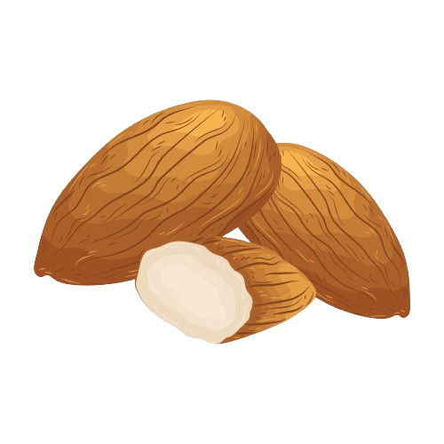
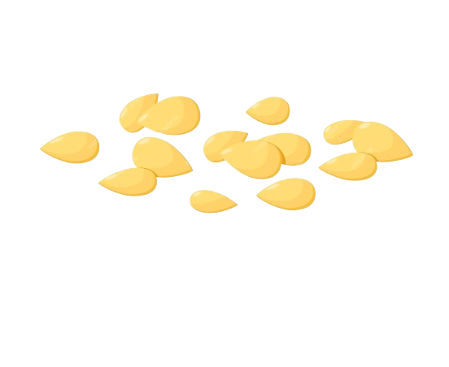

As winter unfolds its chilly embrace, our bodies yearn for nourishment that not only provides warmth but also fortifies against seasonal challenges. In this comprehensive guide, we delve into the intricacies of "Winter Wellness: Embracing the Bounty of Nutrients from Indian Nature." Join us on a journey through the rich offerings of Indian winter produce, each laden with essential nutrients crucial for robust health and delightful winter flavors.
Citrus Symphony: Winter in India brings forth a symphony of citrus fruits, each a powerhouse of Vitamin C. Oranges, known for their juicy sweetness, not only delight the taste buds but also boost the immune system. Guavas, with their vibrant taste and fragrance, become a nutrient-packed addition to your winter diet, offering a generous dose of Vitamin C to ward off colds and invigorate your body.
Amla Amplitude: Enter the world of 'amla,' the Indian gooseberry, celebrated for its extraordinary Vitamin C content. As winter sets in, incorporating amla into your routine becomes a ritual of wellness. Beyond its immune-boosting properties, amla promotes collagen production, contributing to healthy and radiant skin throughout the colder months.
Palak Power: Embrace the verdant goodness of spinach, or 'palak,' as it takes center stage in winter. Bursting with iron, palak becomes a vital nutrient to combat anemia and infuse your body with the energy needed to navigate the colder days. Discover delicious ways to incorporate palak into your meals, creating a winter shield against fatigue.
Methi Magic: Unlock the magic of fenugreek, or 'methi,' a winter herb that boasts a myriad of health benefits. Rich in iron, magnesium, and fiber, methi aids digestion and contributes to heart health. Delve into the culinary possibilities of methi, turning it into a winter ally for both flavor and well-being.
Garlic Guardian: Step into the aromatic wonderland of garlic, a culinary gem celebrated not only for its flavor but also for its immune-boosting properties. As winter brings its share of infections, garlic emerges as a guardian, fighting off ailments and contributing to overall heart health. Learn how to incorporate this culinary hero into your winter dishes.
Turmeric Treasure: Explore the golden treasure trove of turmeric, a spice synonymous with Indian kitchens. Rich in curcumin, turmeric becomes a natural anti-inflammatory and antioxidant, making it an essential part of your winter wellness arsenal. Discover ways to infuse the warmth of turmeric into your daily routine, promoting health and vitality.
Almond Ambrosia: Indulge in the ambrosial richness of almonds, a winter delight that not only warms the soul but also provides a wealth of nutrients. With high levels of Vitamin E and healthy fats, almonds become a wholesome snack that nurtures both brain health and skin radiance during the colder months. Learn creative ways to incorporate almonds into your winter diet for a nourishing and delightful experience.
Sesame Symphony: Immerse yourself in the symphony of sesame seeds, or 'til,' as they take center stage in winter sweets and savories. Packed with calcium, iron, and magnesium, sesame seeds become an integral part of winter nutrition, supporting bone health and providing sustained energy. Explore the delightful world of 'til' in traditional Indian recipes, adding a nutty crunch to your winter palate.
As we conclude our exploration of winter nutrients abundant in Indian nature, let the richness of seasonal produce be your guide to a wholesome and vibrant winter. From the citrusy burst of Vitamin C to the iron-infused greens, the aromatic wonders of garlic and turmeric to the nutty delights of almonds and sesame seeds, each element contributes to a tapestry of winter wellness. Savor the flavors, embrace the nourishment, and let the bountiful gifts of Indian nature fortify your health during the colder months. Welcome to a season of Winter Wellness, where every bite is a celebration of robust health and delightful flavors. 🍊🌿🌰✨